第1回:陰関数の定理
0. この回の全体像(授業計画) 板書 p.1
板書の最初のページには、秋学期の授業計画が書かれていました。
偏微分とその応用
◎ 陰関数の定理
◎ ラグランジュの未定乗数法(条件付き極大・極小問題)
各項目ごとにレポート課題(3回)
つまり秋学期の最初のテーマは、偏微分を使って「方程式から関数を作る」話(陰関数の定理)と、それを使って「条件つきの最大・最小」を調べる話(ラグランジュの未定乗数法)です。今回はこのうちの陰関数の定理です。次回以降のラグランジュの未定乗数法でも、今回出てくる勾配ベクトルと接線・接平面の考え方がそのまま使われます。
この回を一言で言うと:
方程式 $f(x,y)=0$ は $x$ と $y$ の関係式です。これを「$y=\varphi(x)$ の形」にきれいに解けなくても、ある条件($f_y(a,b)\ne 0$)さえ成り立てば、点 $(a,b)$ のまわりでは$y$ は $x$ の関数として決まることが保証されます。しかもその関数の傾きは、解かなくても $$\varphi'(x)=-\frac{f_x(x,y)}{f_y(x,y)}$$ と計算できます。
以下では、まず必要な基礎(春学期の内容)を丁寧に復習してから、板書の順に進みます。基礎はすでに知っているところは飛ばしてかまいません。紫色の枠は「基礎の復習」、黄色の枠は「板書にないが、流れを理解するために私が補った部分」です。
この部分の板書(p.1–2)の写真を見る
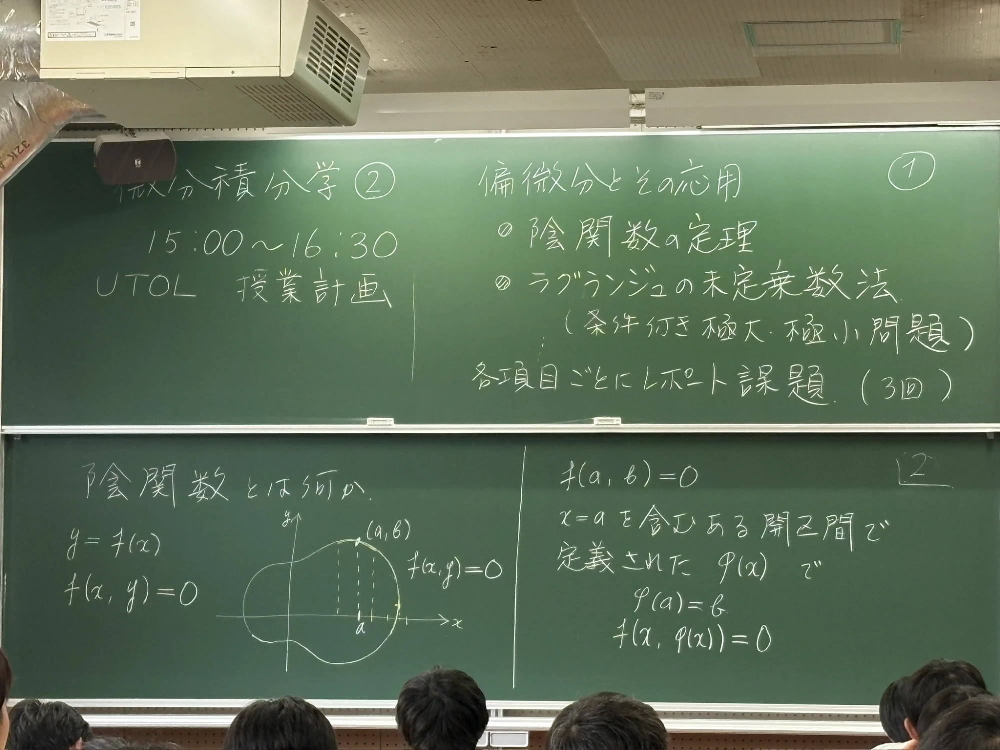
1. 準備:春学期の復習(基礎の確認)
陰関数の定理の証明や使い方で使う道具を、先に全部並べておきます。
1.1 1変数関数の微分
関数 $g(x)$ の $x=a$ での微分係数(その点での傾き)は $$g'(a)=\lim_{h\to 0}\frac{g(a+h)-g(a)}{h}$$ で定義されます。各 $x$ に対して $g'(x)$ を対応させる関数が導関数です。
意味は「$x$ を $a$ から $h$ だけ動かしたとき、$g$ の値がどれだけ変わるか(変化量)を、動かした量 $h$ で割ったもの」です。$h$ をどんどん小さくした極限なので、グラフの接線の傾きになります。
1.2 中間値の定理
関数 $g$ が閉区間 $[p,q]$ で連続で、$g(p)\lt 0\lt g(q)$ ならば、$g(c)=0$ となる $c$ が $p\lt c\lt q$ の中に少なくとも1つある。
(一般には「$g(p)$ と $g(q)$ の間の値は必ずとる」という形ですが、今回使うのは「間の値が $0$」の場合です。)
1.3 微分の符号と単調増加
区間で $g'(y)\gt 0$ ならば、$g$ はその区間で単調増加(厳密に増加)です。つまり $y_1\lt y_2$ なら $g(y_1)\lt g(y_2)$。
理由は平均値の定理です。$g(y_2)-g(y_1)=g'(\xi)(y_2-y_1)$ となる $\xi$ が間にあり、右辺は「正×正」なので正になります。
今回は特に、単調増加な関数は同じ値を2回とらない(だから $g(y)=0$ となる $y$ は高々1つ)という使い方が重要です。これが「関数 $\varphi(x)$ が一意に決まる」ことの理由になります。
1.4 開区間・近傍・$\varepsilon$ の記号
開区間 $(a-\varepsilon,\,a+\varepsilon)$ とは、$a-\varepsilon\lt x\lt a+\varepsilon$ をみたす $x$ 全体、つまり$a$ から距離 $\varepsilon$ 未満の範囲です(両端は含みません)。
「$x=a$ を含むある開区間」とは、「$a$ のごく近く(どれだけ狭くてもよいから、とにかく $a$ の両側に少し広がった範囲)」という意味です。$\varepsilon$ は小さい正の数を表す文字として使います。
1.5 2変数関数と偏微分
2つの変数 $x,y$ をもつ関数 $f(x,y)$ について、
・$x$ についての偏微分:$y$ を定数として固定して、$x$ だけの関数とみて微分する。 $$f_x(a,b)=\frac{\partial f}{\partial x}(a,b)=\lim_{h\to 0}\frac{f(a+h,\,b)-f(a,\,b)}{h}$$
・$y$ についての偏微分:$x$ を固定して、$y$ だけの関数とみて微分する。 $$f_y(a,b)=\frac{\partial f}{\partial y}(a,b)=\lim_{k\to 0}\frac{f(a,\,b+k)-f(a,\,b)}{k}$$
意味は「$x$ 方向だけに動いたときの $f$ の変化率」「$y$ 方向だけに動いたときの $f$ の変化率」です。
計算例: $f(x,y)=x^2y+3y^2$ のとき、$f_x$ では $y$ を定数扱いして $f_x=2xy$。$f_y$ では $x$ を定数扱いして $f_y=x^2+6y$。たとえば $(a,b)=(1,2)$ なら $f_x(1,2)=4,\ f_y(1,2)=13$。
2変数関数 $f(x,y)$ は「地図上の各地点 $(x,y)$ に高さ $f$ が決まっている」ものと見ると分かりやすいです。等しい高さの点を結んだ線が等高線です。そしてこの回の主役 $f(x,y)=0$ は、「高さがちょうど $0$ の等高線」にほかなりません。
1.6 連続と $C^1$ 級・$C^2$ 級
・$f(x,y)$ が点 $(a,b)$ で連続とは、$(x,y)\to(a,b)$ のとき $f(x,y)\to f(a,b)$ となること(値がジャンプしない)。
・$f$ が $C^1$ 級とは、偏導関数 $f_x,\ f_y$ が存在して、しかも連続であること(板書 p.5 の「つまり $f_x,f_y$ が存在して連続」がこれです)。
・$f$ が $C^2$ 級とは、2階までの偏導関数 $f_{xx},f_{xy},f_{yx},f_{yy}$ がすべて存在して連続であること。このとき $f_{xy}=f_{yx}$(偏微分の順序を入れ替えてよい)が成り立ちます。
$C^1$ 級という条件がなぜ大事かというと、$f_y$ が連続だからこそ「$f_y(a,b)\gt 0$ なら、$(a,b)$ の近くでずっと $f_y\gt 0$」と言えるからです(連続関数は、ある点で正なら、その近くでも正)。これが証明の出発点になります。
1.7 合成関数の微分(連鎖律)
$f(x,y)$ が $C^1$ 級で、$x=x(t),\ y=y(t)$ が $t$ の微分可能な関数のとき、$f(x(t),y(t))$ を $t$ で微分すると $$\frac{d}{dt}f(x(t),y(t))=f_x\,\frac{dx}{dt}+f_y\,\frac{dy}{dt}$$ (右辺の $f_x,f_y$ は $(x(t),y(t))$ での値)。
1変数の $\dfrac{d}{dt}g(u(t))=g'(u)\,u'(t)$ の「変数が2つ版」で、「$x$ を通る経路の分」+「$y$ を通る経路の分」を足すと覚えます。
1.8 2変数の平均値の定理
$f$ が $C^1$ 級のとき、点 $(x,y)$ から $(x+h,\,y+k)$ まで移ると、ある $\theta$($0\lt\theta\lt 1$)が存在して $$f(x+h,\,y+k)=f(x,y)+h\,f_x(x+\theta h,\,y+\theta k)+k\,f_y(x+\theta h,\,y+\theta k)$$ が成り立つ(板書 p.16 の右半分)。
なぜ? 2点を結ぶ線分上を $t$($0\le t\le 1$)で動かして、1変数関数 $G(t)=f(x+th,\,y+tk)$ を考えます。1変数の平均値の定理より $G(1)-G(0)=G'(\theta)$($0\lt\theta\lt 1$)。連鎖律(1.7)で $G'(t)=h f_x(\cdots)+k f_y(\cdots)$ なので、上の式になります。
1.9 勾配ベクトル(グラディエント)
$f(x,y)$ の勾配ベクトル(gradient)を、偏微分を並べたベクトル $$\nabla f=(f_x,\ f_y)\qquad(\operatorname{grad} f\text{ とも書く})$$ で定める(板書 p.4, p.15)。$\nabla$ は「ナブラ」と読みます。
意味: 「その点で、$f$ の値がいちばん急に増える向き」を向き、その急さを大きさにもつベクトルです。そして重要な事実として、等高線に直交する向きを向きます。これは後の p.17–18 と p.25–26 で証明されます。
2. 陰関数とは何か 板書 p.2–3
2.1 「陽」に書ける関数と「陰」にしか書けない関係
これまで扱ってきた関数は、$y=f(x)$ のように「$y=$ ○○」の形で書かれたものでした。これを陽関数(explicit function)と呼びます。$x$ を入れれば $y$ がそのまま出てきます。
一方、板書 p.2 のように、$x$ と $y$ の関係が $$f(x,y)=0$$ という方程式の形で与えられることもあります。たとえば円 $x^2+y^2-1=0$ や、$x^3+y^3-3xy=0$ のような式です。
この方程式のグラフは、$xy$ 平面上の曲線(板書のたまご型の曲線)になります。しかし曲線全体では、同じ $x$ に対して $y$ が2つ以上あるのが普通で、関数のグラフにはなっていません(下図の青い曲線全体は、縦線で切ると2点で交わる)。
2.2 陰関数の定義
そこで、「曲線のある一点の近くだけ」に注目します。板書 p.2 の右半分には次のように書かれています。
$f(a,b)=0$ とする。$x=a$ を含むある開区間で定義された関数 $\varphi(x)$ で、 $$\varphi(a)=b,\qquad f(x,\varphi(x))=0$$ をみたすものがあるとき、この関数 $y=\varphi(x)$ を、$f(x,y)=0$ で定義された陰関数(implicit function)という。
言葉でほぐすと:
- $\varphi(a)=b$:曲線は点 $(a,b)$ を通る。陰関数のグラフもその点を通る。
- $f(x,\varphi(x))=0$:$x$ に対して $y=\varphi(x)$ を代入したとき、方程式 $f(x,y)=0$ が常に成り立つ。つまり $(x,\varphi(x))$ はずっと曲線の上にある。
- 「$x=a$ を含むある開区間で」:曲線全体ではなく、$a$ の近くだけで成り立てばよい(局所的)。
板書 p.3 には「implicit ↔ explicit」(陰 ↔ 陽)と書かれています。「陽に($y=\cdots$ と)書けない代わりに、方程式の陰に隠れている関数」という意味です。
$x^2+y^2-1=0$ なら $y=\sqrt{1-x^2}$ と解けますが、$x^3+y^3-3xy=0$ のように $y$ について解く公式が書けない式でも、陰関数は(条件さえ合えば)存在します。陰関数の定理は、「具体的に解けなくても、存在することと、微分の仕方」を保証してくれる定理です。
2.3 この回の問い
板書 p.3 の右半分には、この回の中心になる問いが書かれています。
$f(x,y)=0$ について、点 $(a,b)$ においてどのような条件をみたすとき、陰関数 $y=\varphi(x)$ が $x=a$ のまわりで存在するか?
この答えが、次の節以降で出てくる陰関数の定理(条件:$f$ が $C^1$ 級で $f_y(a,b)\neq 0$)です。
この部分の板書(p.2–3)の写真を見る
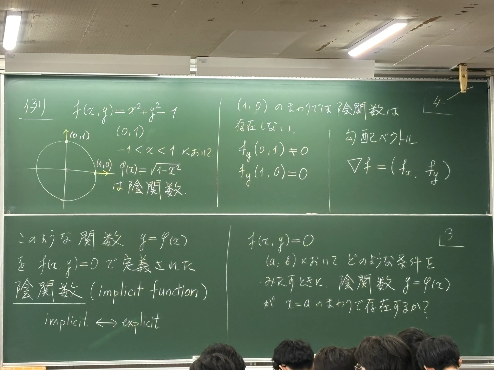
3. 例:円 $x^2+y^2-1=0$ 板書 p.4
定理の前に、もっとも単純な例で「陰関数がある場所・ない場所」を確かめます。板書 p.4 の左半分です。
$f(x,y)=x^2+y^2-1$。方程式 $f(x,y)=0$ は原点中心・半径1の円です。
3.1 $(0,1)$ のまわり:陰関数がある
$-1\lt x\lt 1$ において $$\varphi(x)=\sqrt{1-x^2}$$ とおくと、$\varphi(0)=1$ で、$f(x,\varphi(x))=x^2+(1-x^2)-1=0$ が成り立ちます。したがって $\varphi$ は、$f(x,y)=0$ で定義された $(0,1)$ のまわりの陰関数です(板書の「は陰関数」)。
3.2 $(1,0)$ のまわり:陰関数は存在しない
点 $(1,0)$ のまわりでは、$y=\varphi(x)$ の形では書けません。$x$ が $1$ より少し小さいとき、$y=\sqrt{1-x^2}$ と $y=-\sqrt{1-x^2}$ の2つの値があり($(1,0)$ の近くのどちらも曲線上の点)、$1$ より大きい $x$ では点がありません。「$x$ に $y$ がちょうど1つ対応する」という関数の条件が崩れます。
3.3 見分ける鍵:$f_y$ の値
$f_x=2x,\ f_y=2y$ なので、
| 点 | $f_y$ の値 | 陰関数 $y=\varphi(x)$ |
|---|---|---|
| $(0,1)$ | $f_y(0,1)=2\ne 0$ | 存在する |
| $(1,0)$ | $f_y(1,0)=0$ | 存在しない |
板書の「$f_y(0,1)\neq 0$、$f_y(1,0)=0$」はこの対比です。$f_y\ne 0$ かどうかが、「$y=\varphi(x)$ の形で書ける」かどうかを分けているらしい——これが次の定理の中身です。
なお板書の右端の「勾配ベクトル $\nabla f=(f_x,f_y)$」は、この後の説明のための予告で、定義は 1.9 のとおりです。
この部分の板書(p.4)の写真を見る
4. 陰関数の定理(主張) 板書 p.5–6
$f(x,y)$ は $C^1$ 級とする(つまり $f_x,f_y$ が存在して連続)。$f(a,b)=0$ とし、さらに $$\boxed{\;f_y(a,b)\neq 0\;}$$ とする。このとき、$x=a$ を含むある開区間で定義された関数 $y=\varphi(x)$ で $$\varphi(a)=b,\qquad f(x,\varphi(x))=0$$ をみたすものが存在する。さらに、$\varphi(x)$ は微分可能で、 $$\varphi'(x)=-\frac{f_x(x,y)}{f_y(x,y)}\qquad(y=\varphi(x))$$ と表される。
板書の p.5(仮定)・p.6(結論)をつなげて書いたものです。この定理は、次の3つのことを同時に言っています。
- 存在:点 $(a,b)$ のまわりで、$y$ が $x$ の関数 $\varphi(x)$ として決まる。
- 一意性(p.11):そのような $\varphi$ は(狭い範囲では)ちょうど1つに決まる。
- 微分可能性と公式:導関数は $-f_x/f_y$。$\varphi$ を具体的に求めなくても傾きが分かる。
点 $(a,b)$ のごく近くでは、曲線は接線とほとんど同じです。$f(x,y)=0$ を1次近似すると、 $$f_x(a,b)(x-a)+f_y(a,b)(y-b)\approx 0.$$ これを $y$ について解こうとすると $$y-b\approx -\frac{f_x(a,b)}{f_y(a,b)}(x-a)$$ となり、$f_y(a,b)\ne 0$ のときだけ(0で割らずに)解けます。もし $f_y(a,b)=0$ なら、$y$ は上の式で決まらず、$x$ は $a$ のまま(縦線)になってしまう——これが円の $(1,0)$ で起きていたことです。
この部分の板書(p.5–6)の写真を見る
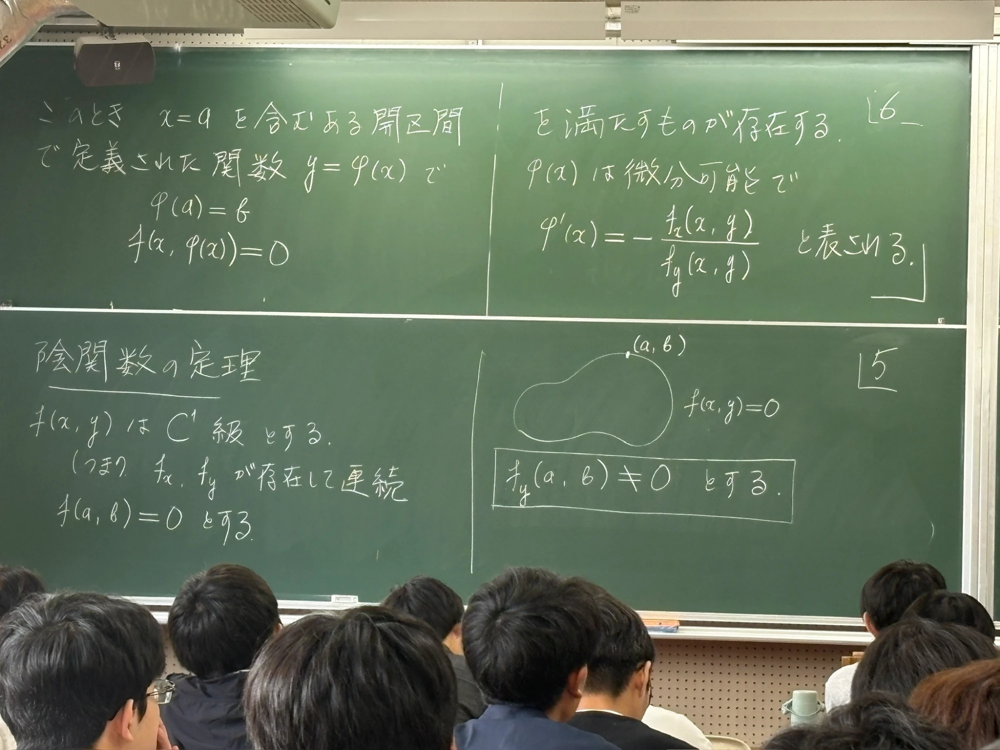
5. 証明①:陰関数 $\varphi$ が存在すること 板書 p.7–11
板書 p.8 以降の証明を、段階に分けて読みます。方針は次のとおりです。
各 $x$ に対して「$f(x,y)=0$ を満たす $y$」を中間値の定理で見つけ、それがただ1つであることを単調性で示す。そうして $x\mapsto y$ という対応(=関数 $\varphi$)を作る。
Step 0:$f_y(a,b)>0$ としてよい
$f_y(a,b)\ne 0$ なので、正か負のどちらかです。もし負なら、$f$ を $-f$ に取り替えます。方程式 $-f(x,y)=0$ は $f(x,y)=0$ と同じ曲線で、$-f$ の $y$ 偏微分は正になります。したがって一般性を失わずに $f_y(a,b)\gt 0$ と仮定してよい。(板書では、この仮定を前提に p.8 が始まっています。)
Step 1:$(a,b)$ の近くで $f_y\gt0$(板書 p.7 に相当)
板書の p.7 は欠けていますが、p.8 の「$f_y(a,y)\gt 0$($b-\varepsilon\lt y\lt b+\varepsilon$)」を使うために、おそらく次のことが書かれていたはずです。
$f$ は $C^1$ 級なので $f_y$ は連続です。連続関数は、ある点で正ならその近くでも正だから、ある $\varepsilon\gt 0$ が存在して $$|x-a|\lt\varepsilon,\ |y-b|\lt\varepsilon\ \Longrightarrow\ f_y(x,y)\gt 0$$ が成り立つ。この正方形(板書の図の長方形の枠)を $Q=(a-\varepsilon,a+\varepsilon)\times(b-\varepsilon,b+\varepsilon)$ とおく。
Step 2:$x=a$ のとき $y\mapsto f(a,y)$ は単調増加(板書 p.8)
$x=a$ に固定すると、$f(a,y)$ は $y$ だけの1変数関数です。$Q$ の中では $f_y(a,y)\gt0$ なので、1.3 により単調増加です。そして $f(a,b)=0$ なので、$b$ のちょうど左では負、右では正です。つまり $$b-\varepsilon\lt y_1\lt b\lt y_2\lt b+\varepsilon\ \text{ をとれば }\ f(a,y_1)\lt 0,\quad f(a,y_2)\gt 0.$$
Step 3:$x$ を少し動かしても符号は変わらない(板書 p.9)
$f$ は連続なので、$f(a,y_1)\lt 0$ という事実は、$x$ を $a$ から少しだけ動かしても保たれます。同じく $f(a,y_2)\gt 0$ も保たれます。したがって、$0\lt\varepsilon'\lt\varepsilon$ をうまくとって $$a-\varepsilon'\lt x\lt a+\varepsilon'\ \Longrightarrow\ f(x,y_1)\lt 0,\quad f(x,y_2)\gt 0$$ が成り立つようにできます。
Step 4:縦線ごとに $f(x,y)=0$ となる $y$ が見つかる(板書 p.10)
帯の中の勝手な $a'$($a-\varepsilon'\lt a'\lt a+\varepsilon'$)を1つとります。縦線 $x=a'$ の上で $y$ だけを動かす関数 $y\mapsto f(a',y)$ は連続で、 $$f(a',y_1)\lt 0,\qquad f(a',y_2)\gt 0$$ です。したがって中間値の定理(1.2)より、 $$f(a',y)=0,\qquad y_1\lt y\lt y_2$$ をみたす $y$ が存在します。
Step 5:その $y$ はただ1つ——だから関数 $\varphi$ が決まる(板書 p.10–11)
縦線 $x=a'$ も $Q$ の中にあるので $f_y\gt 0$ で、$y\mapsto f(a',y)$ は単調増加です(1.3)。単調増加な関数は同じ値を2回とらないので、$f(a',y)=0$ となる $y$ はちょうど1つです。この $y$ を $$y=\varphi(a')$$ とおきます。これを帯の中のすべての $x$ に対して行うと、$x\mapsto\varphi(x)$ という関数が定まり、 $$f(x,\varphi(x))=0\qquad(a-\varepsilon'\lt x\lt a+\varepsilon')$$ が成り立ちます(板書 p.10 の枠内)。特に $x=a$ では $f(a,b)=0$ で、一意性から $\varphi(a)=b$ です。
板書 p.11 の左半分に「$\varphi(a)=\varphi(b)$」とありますが、これは内容から $\varphi(a)=b$ の書き間違いと判断しました(上で述べたとおり、$\varphi(a)=b$ が陰関数の条件です)。
以上で、$x=a$ を含む開区間 $(a-\varepsilon',a+\varepsilon')$ で定義された陰関数 $y=\varphi(x)$ が存在し、しかも一意に決まることが示されました。板書 p.11 の最後の言葉 「これが $f(x,y)=0$ で定義される $x=a$ のまわりの陰関数 $y=\varphi(x)$」は、まさにこのことを言っています。
この部分の板書(p.8–11)の写真を見る
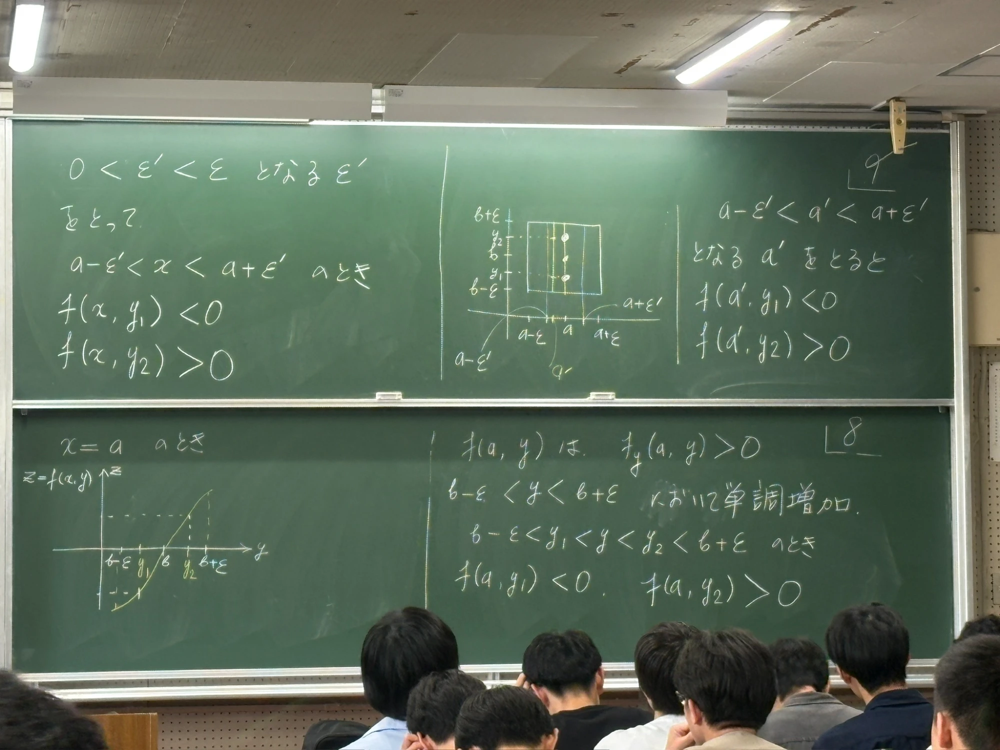
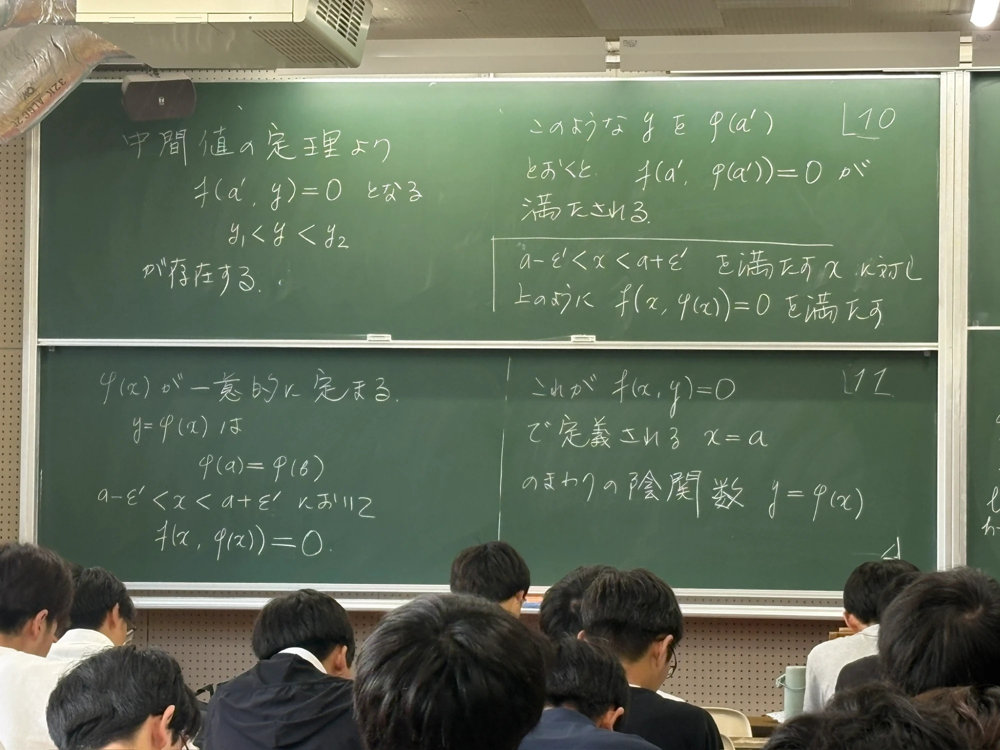
6. 証明②:$\varphi$ は微分可能で、$\varphi'=-f_x/f_y$ 板書 p.12–13・p.16右半分
ここまでで $\varphi$ という関数は作れました。次に、$\varphi$ が微分可能であることと導関数の公式を示します。
6.1 $\varphi$ は連続(板書 p.12 に相当・補足)
次の p.13 では「$h\to 0$ のとき $k\to 0$」を使います。それは $\varphi$ が連続だから成り立ちます。理由は p.9–11 の構成そのものです:
$y_1,y_2$ を $b$ にいくらでも近くとれます($\varepsilon$ を小さくしてよい)。そのたびに、$a$ に十分近い $x$ すべてで $y_1\lt\varphi(x)\lt y_2$ となる(Step 3–5)。つまり「$x$ が $a$ に近づけば、$\varphi(x)$ は $b=\varphi(a)$ にいくらでも近づく」ので、$\varphi$ は $a$ で連続です。同じ議論は $\varphi$ の定義域のどの点でもできる(その点でも $f_y\gt 0$ だから)ので、$\varphi$ はどこでも連続です。
6.2 差分の言い換え(板書 p.13・左上)
定義域の1点 $x$ をとり、$y=\varphi(x)$ とします。$x$ を $h$ だけ動かしたとき、$\varphi$ の値が $k$ だけ変わるとします: $$\varphi(x+h)=\varphi(x)+k=y+k.$$ すると $\varphi'(x)$ の定義の分数は、 $$\lim_{h\to0}\frac{\varphi(x+h)-\varphi(x)}{h}=\lim_{h\to0}\frac{k}{h}\qquad(\ast)$$ と書けます。ここで $\varphi$ の連続性より、$h\to0$ のとき $k\to 0$ です。
さらに、2点 $(x,y)$ と $(x+h,\,y+k)$ はどちらも曲線上にあります。つまり $$f(x,y)=0,\qquad f(x+h,\,y+k)=0.$$
6.3 平均値の定理で $k/h$ を表す(板書 p.16右・p.13)
2変数の平均値の定理(1.8)より、ある $\theta$($0\lt\theta\lt 1$)があって $$f(x+h,\,y+k)=f(x,y)+h\,f_x(x+\theta h,\,y+\theta k)+k\,f_y(x+\theta h,\,y+\theta k).$$ 左辺も、右辺の $f(x,y)$ も $0$ なので、 $$0=h\,f_x(x+\theta h,\,y+\theta k)+k\,f_y(x+\theta h,\,y+\theta k).$$ これを $h\,f_y(\cdots)$ で割って整理すると($f_y\gt0$ なので割れる)、 $$\frac{k}{h}=-\frac{f_x(x+\theta h,\,y+\theta k)}{f_y(x+\theta h,\,y+\theta k)}.$$
6.4 $h\to 0$ とする(板書 p.13・右)
$h\to 0$ のとき $k\to 0$ なので、点 $(x+\theta h,\,y+\theta k)$ は $(x,y)$ に近づきます($\theta$ は何であっても $0\lt\theta\lt1$ なので、動く量 $\theta h,\theta k$ はそれぞれ $h,k$ より小さい)。$f_x,f_y$ は連続で、$f_y(x,y)\ne0$ なので、 $$(\ast)=\lim_{h\to0}\frac{k}{h}=-\frac{f_x(x,y)}{f_y(x,y)}.$$ 極限が存在するので $\varphi$ は微分可能で、 $$\boxed{\ \varphi'(x)=-\frac{f_x(x,y)}{f_y(x,y)}\quad(y=\varphi(x))\ }$$ が示されました。これが板書 p.13 の最後の式、そして p.6 の主張の後半です。
曲線上で少し動いたときの $x$ の変化 $h$ と $y$ の変化 $k$ は、「全体の変化が $0$($f$ が一定)」という制約で結ばれています。$f$ の変化量 $\approx f_x h+f_y k=0$ から、$k/h=-f_x/f_y$ と出る——これが公式の意味です。平均値の定理は、この「$\approx$」をきちんと「$=$」に直すための道具です。
この部分の板書(p.13・p.16の右半分)の写真を見る
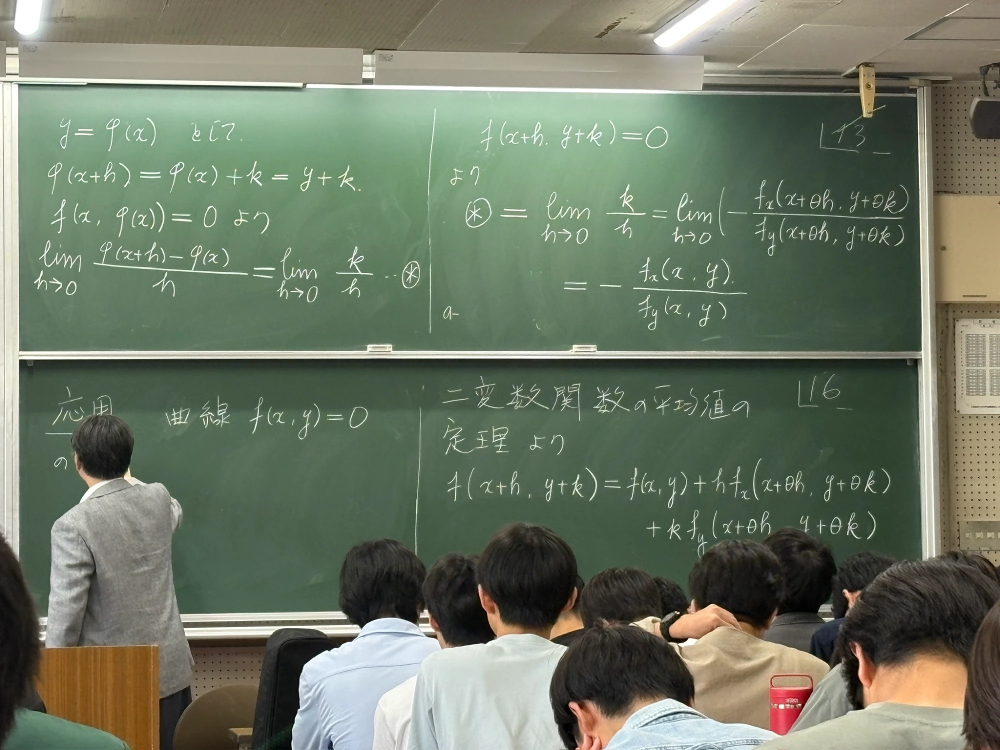
7. 別の導き方:連鎖律で公式を出す／2階導関数 板書 p.19–20
$\varphi$ が微分可能だと分かった後なら、公式 $\varphi'=-f_x/f_y$ はもっと簡単に導けます。これは実際に計算するときの覚え方としても便利です。
7.1 連鎖律で導く(板書 p.20 左・p.19 相当)
恒等式 $f(x,\varphi(x))=0$ の両辺を $x$ で微分します。右辺は定数 $0$ なので $0$。左辺は連鎖律(1.7)で、$x(t)=t$ と見て $y=\varphi(x)$ として: $$\frac{d}{dx}f(x,\varphi(x))=f_x(x,y)\cdot 1+f_y(x,y)\,\varphi'(x).$$ したがって $$f_x(x,y)+f_y(x,y)\,\varphi'(x)=0.$$ $f_y\ne0$ として $\varphi'$ について解くと、 $$\varphi'(x)=-\frac{f_x(x,y)}{f_y(x,y)}.$$
この導出は「$\varphi$ が微分可能」をすでに使っています(連鎖律の前提)。だから、微分可能性そのものは p.13 の証明(第6節)で示す必要があり、この計算は公式を覚える・使うための簡単な方法として理解するのがよいです。
板書に p.19 はありませんでした。p.18→p.20 の流れから、おそらく「別の導出」の導入(あるいは連鎖律の復習)が書かれていたものと思われます。内容は上のとおり p.20 の左半分だけで完結しています。
7.2 2階導関数 $\varphi''$(板書 p.20 右)
$f$ が $C^2$ 級のとき、$\varphi$ の2階導関数も求まります。7.1 で得た恒等式 $$f_x(x,\varphi(x))+f_y(x,\varphi(x))\,\varphi'(x)=0\qquad(\heartsuit)$$ の両辺をもう一度 $x$ で微分します。
- 第1項 $f_x(x,\varphi(x))$ の微分 = $f_{xx}+f_{xy}\,\varphi'$(連鎖律)
- 第2項 $f_y\cdot\varphi'$ は積の微分:$\bigl(f_y\bigr)'\cdot\varphi'+f_y\cdot\varphi''$。ここで $(f_y)'=f_{yx}+f_{yy}\,\varphi'$
まとめると、 $$f_{xx}+f_{xy}\varphi'+(f_{yx}+f_{yy}\varphi')\varphi'+f_y\varphi''=0.$$ $C^2$ 級なので $f_{xy}=f_{yx}$ として、 $$f_{xx}+2f_{xy}\varphi'+f_{yy}(\varphi')^2+f_y\varphi''=0.$$ $\varphi''$ について解いて、$\varphi'=-f_x/f_y$ を代入します: $$\varphi''=-\frac{f_{xx}+2f_{xy}\varphi'+f_{yy}(\varphi')^2}{f_y} =-\frac{f_{xx}-2f_{xy}\dfrac{f_x}{f_y}+f_{yy}\dfrac{f_x^2}{f_y^2}}{f_y}.$$ 分子分母に $f_y^2$ をかけて整理すると、 $$\boxed{\ \varphi''(x)=-\frac{f_{xx}f_y^{\,2}-2f_{xy}f_xf_y+f_{yy}f_x^{\,2}}{f_y^{\,3}}\ }$$ これが板書 p.20 の最後の式です。
実際の問題では、この長い公式を暗記するより、$(\heartsuit)$ をもう一度微分する、という手順を覚えるほうが安全です。
この部分の板書(p.20)の写真を見る
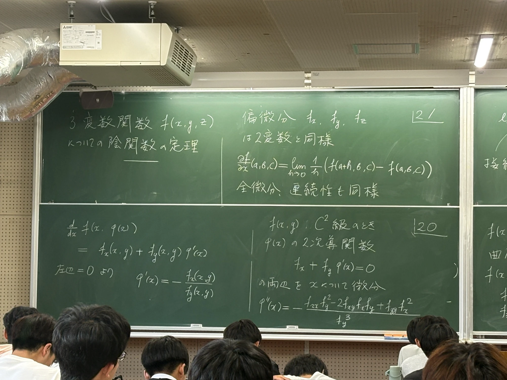
8. 注意:$x$ の関数としてだめなら $y$ の関数として 板書 p.14–15
定理の条件は $f_y(a,b)\ne0$ でした。もし $f_y(a,b)=0$ でも、$f_x(a,b)\ne 0$ なら、$x$ と $y$ の役割を入れ替えて同じことが言えます。
$f(a,b)=0$、$f_x(a,b)\ne0$ とする。このとき、$y=b$ を含むある開区間で定義された関数 $x=\psi(y)$($\psi$ は「プサイ」)で $$a=\psi(b),\qquad f(\psi(y),y)=0$$ をみたすものが存在する。(導関数は $\psi'(y)=-\dfrac{f_y}{f_x}$。)
理由:定理の証明で $x$ と $y$ をそっくり入れ替えるだけです。今度は「曲線を横から見て、$y$ に対して $x$ がただ1つ決まる」という関数になります。円の例なら、$(1,0)$ のまわりでは $x=\sqrt{1-y^2}$ がその陰関数です(右半円)。
8.1 つまり $\nabla f\ne(0,0)$ ならよい(板書 p.15)
$\nabla f(a,b)\ne(0,0)$ ならば、$x$ または $y$ の関数として局所的に陰関数が定まる。
$\nabla f=(f_x,f_y)\ne(0,0)$ とは、$f_x$ と $f_y$ が両方とも $0$ ではないということではなく、「少なくとも一方は $0$ でない」ということです。$f_y\neq0$ なら定理をそのまま、$f_x\neq0$ なら上の注意を使えばよいので、どちらの場合も陰関数が存在します。
・$\nabla f=(0,0)$ の点(特異点)では、陰関数が存在するとは限りません。たとえば $f=x^2-y^2$ の原点では、曲線は $y=x$ と $y=-x$ が交差していて、$x$ を決めても $y$ が2つ、$y$ を決めても $x$ が2つになります。
・ただし $f_y(a,b)=0$ でも陰関数が存在する場合があります。$f=x-y^3$ の原点では $f_y=-3y^2=0$ ですが、曲線は $y=\sqrt[3]{x}$ で、$y$ は $x$ の関数として存在します(ただし原点で微分不可能)。つまり$f_y\ne0$ は十分条件であって、必要条件ではありません。
この部分の板書(p.14–15)の写真を見る
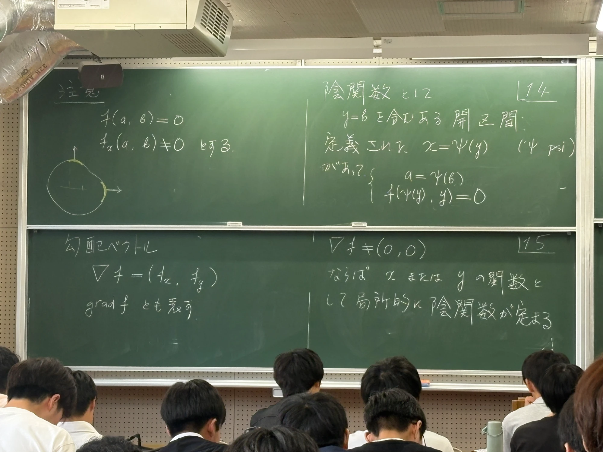
9. 応用:曲線 $f(x,y)=0$ の接線の方程式 板書 p.16–18
板書 p.16 の左半分に「応用 曲線 $f(x,y)=0$ の(接線)」と書き始められています。陰関数の定理の応用として、曲線の接線を求めます。
9.1 接線の方程式(板書 p.17 左)
関数 $y=\varphi(x)$ のグラフの、点 $(a,b)$($b=\varphi(a)$)における接線は $$y-b=\varphi'(a)\,(x-a)$$ です。「点 $(a,b)$ を通る、傾き $\varphi'(a)$ の直線」を表しています。
$f_y(a,b)\ne0$ のとき、陰関数 $y=\varphi(x)$ があって $\varphi'(a)=-\dfrac{f_x(a,b)}{f_y(a,b)}$ なので、 $$y-b=-\frac{f_x(a,b)}{f_y(a,b)}(x-a).$$ 両辺に $f_y(a,b)$ をかけて移項すると、 $$\boxed{\ f_x(a,b)(x-a)+f_y(a,b)(y-b)=0\ }\qquad(\mathrm{T})$$ これが $(a,b)$ における接線の方程式です(板書 p.17 の枠。板書では ⊛ と呼ばれている式)。
9.2 $f_x(a,b)\ne0$ の場合も同じ式(板書 p.17 右)
$f_x(a,b)\ne 0$ のときは、陰関数 $x=\psi(y)$ を使います。接線は $x-a=\psi'(b)(y-b)$、$\psi'(b)=-\dfrac{f_y(a,b)}{f_x(a,b)}$ なので、整理すると全く同じ式 (T) になります。つまり、(T) は $\nabla f(a,b)\ne(0,0)$ でありさえすれば、どちらの場合でも成り立ちます。
9.3 勾配ベクトルと接線の関係(板書 p.18)
2つのベクトル $\vec u=(u_1,u_2)$ と $\vec v=(v_1,v_2)$ の内積は $\vec u\cdot\vec v=u_1v_1+u_2v_2$。内積が $0$ であることと、2つのベクトルが直交する(直角)ことは同じです。
(T) の左辺は、2つのベクトル $$\nabla f(a,b)=(f_x(a,b),\,f_y(a,b)),\qquad (x-a,\ y-b)$$ の内積そのものです。ここで $(x,y)$ は接線 $\ell$ 上の任意の点だから、$(x-a,y-b)$ は接線の方向のベクトル(点 $(a,b)$ から $(x,y)$ へ向かうベクトル)です。(T)=0 は、これが $\nabla f(a,b)$ と直交すると言っています(板書 p.18)。
勾配ベクトル $\nabla f(a,b)$ は、曲線 $f(x,y)=0$ の点 $(a,b)$ での接線と直交する(=法線ベクトル)。
これで、1.9 で予告した「勾配ベクトルは等高線に直交する」が示されました($f(x,y)=0$ は、高さ0の等高線です)。
この部分の板書(p.16–18)の写真を見る
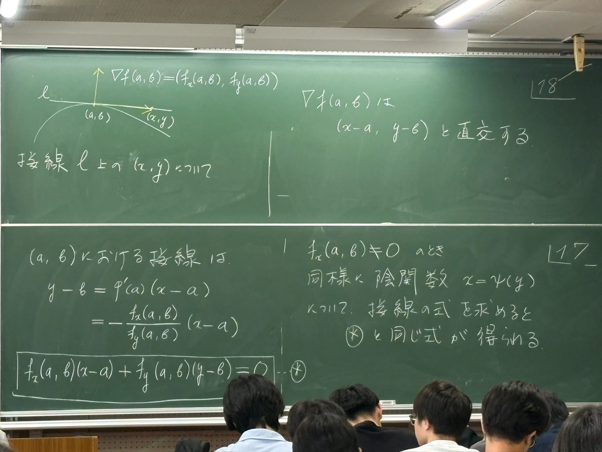
10. 3変数への拡張:曲面と接平面 板書 p.21–26
ここまでは変数が $x,y$ の2つで、方程式 $f(x,y)=0$ は平面上の曲線でした。板書 p.21 からは変数を3つにします。方程式 $f(x,y,z)=0$ は空間の中の曲面です(球面 $x^2+y^2+z^2-1=0$ のようなもの)。話の筋道は2変数と全く同じで、役者が1人増えるだけです。
10.1 3変数関数の偏微分・連鎖律(板書 p.21、p.24左)
3変数関数 $f(x,y,z)$ の偏微分 $f_x,f_y,f_z$ も、2変数と同じく「他の2つを固定して、残り1つで微分」します(板書 p.21)。たとえば $$\frac{\partial f}{\partial x}(a,b,c)=\lim_{h\to0}\frac1h\bigl(f(a+h,b,c)-f(a,b,c)\bigr).$$ 全微分(1次近似できること)や連続性も、2変数と同様に定義します。$C^1$ 級も「$f_x,f_y,f_z$ がすべて存在して連続」で同様です。
3変数の連鎖律(板書 p.24 左)も、道が3本になるだけです: $$\frac{d}{dt}f(x(t),y(t),z(t))=\frac{\partial f}{\partial x}\frac{dx}{dt}+\frac{\partial f}{\partial y}\frac{dy}{dt}+\frac{\partial f}{\partial z}\frac{dz}{dt}.$$
10.2 3変数の陰関数の定理(板書 p.22–23)
平面での「$(a,b)$ を含む開集合」とは、境界を含まない(丸い)開いた範囲、たとえば $(a,b)$ を中心とする半径 $r$ の円板(縁を含まない)のことです。1変数の「開区間」の2次元版です。
$f(x,y,z)=0$ を $\R^3$ の曲面と考える。$f$ は $C^1$ 級とし、$f(a,b,c)=0$、かつ $$f_z(a,b,c)\ne0$$ と仮定する。このとき、$(a,b)$ を含むある開集合で定義された陰関数 $z=\varphi(x,y)$、つまり $$c=\varphi(a,b),\qquad f(x,y,\varphi(x,y))=0$$ をみたすものが存在する。さらに $\varphi$ は $x,y$ について偏微分可能で $$\varphi_x(x,y)=-\frac{f_x(x,y,z)}{f_z(x,y,z)},\qquad \varphi_y(x,y)=-\frac{f_y(x,y,z)}{f_z(x,y,z)}\qquad(z=\varphi(x,y)).$$
図のイメージ:曲面 $f=0$ 上の点 $(a,b,c)$ のまわりで、「$xy$ 平面の $(a,b)$ 近くの円板」の上に、曲面が1枚の板としてのっている——その高さを与える関数が $z=\varphi(x,y)$ です(板書 p.23 左の図)。2変数のときの「$x$ の区間の上に曲線がのる」の1次元アップ版です。
証明は2変数と同じ流れ(中間値の定理と単調性)で、ここでは板書にも詳しく出てきません。導関数の公式は次のように導けます。
10.3 偏導関数の公式を連鎖律で導く(板書 p.24 右)
恒等式 $f(x,y,\varphi(x,y))=0$ の両辺を$x$ で偏微分します($y$ は固定)。連鎖律で、 $$\frac{\partial f}{\partial x}+\frac{\partial f}{\partial z}\frac{\partial\varphi}{\partial x}=0.$$ ($x$ を動かしても $y$ は動かないので、$f_y$ の項は $\dfrac{dy}{dx}=0$ で消える。)同じく$y$ で偏微分すると $$\frac{\partial f}{\partial y}+\frac{\partial f}{\partial z}\frac{\partial\varphi}{\partial y}=0.$$ $f_z\ne0$ のもとで解けば、上の $\varphi_x,\varphi_y$ の公式になります(板書 p.23 右)。
(これは 7.1 の 2変数の導出と、まったく同じ形です。)
10.4 接平面の方程式(板書 p.25–26)
曲線の「接線」に当たるのが、曲面の「接平面」です。関数 $z=\varphi(x,y)$ のグラフの、点 $(a,b,c)$($c=\varphi(a,b)$)での接平面は $$z-c=\varphi_x(a,b)(x-a)+\varphi_y(a,b)(y-b)$$ です。接線 $y-b=\varphi'(a)(x-a)$ の2変数版で、$x$ 方向の傾きと $y$ 方向の傾きの両方を使った平らな板が、曲面に点 $(a,b,c)$ でぴったり接します。
曲面 $f(x,y,z)=0$ の $(a,b,c)$ での接平面を求めます。$\nabla f(a,b,c)=(f_x,f_y,f_z)\ne(0,0,0)$ とします(板書 p.25 左)。まず $f_z(a,b,c)\ne0$ の場合、陰関数 $z=\varphi(x,y)$ があるので、接平面は $$z-c=\varphi_x(a,b)(x-a)+\varphi_y(a,b)(y-b).$$ ここに $\varphi_x=-\dfrac{f_x}{f_z},\ \varphi_y=-\dfrac{f_y}{f_z}$ を代入して(板書 p.25 右): $$z-c=-\frac{f_x(a,b,c)}{f_z(a,b,c)}(x-a)-\frac{f_y(a,b,c)}{f_z(a,b,c)}(y-b)\qquad(\text{板書 p.26 上}).$$ 両辺に $f_z(a,b,c)$ をかけて移項すると、 $$\boxed{\ f_x(a,b,c)(x-a)+f_y(a,b,c)(y-b)+f_z(a,b,c)(z-c)=0\ }$$ これが曲面 $f=0$ の $(a,b,c)$ における接平面の方程式です(板書 p.26 の枠)。
この式の左辺は、2つのベクトル $\nabla f(a,b,c)=(f_x,f_y,f_z)$ と $(x-a,\,y-b,\,z-c)$ の内積です。後者は「接平面上の点 $(x,y,z)$ へ向かうベクトル」ですから、内積が $0$ とは直交すること。
$\nabla f(a,b,c)$ は、曲面 $f=0$ の点 $(a,b,c)$ での接平面と直交する(=接平面の法線ベクトル)(板書 p.26 最後の行)。
$f_z(a,b,c)=0$ でも、$f_x\ne0$ か $f_y\ne0$ のどちらかなら、変数を入れ替えて(2変数のときの $x=\psi(y)$ と同様)同じ式になります。だから $\nabla f\ne(0,0,0)$ でありさえすれば、接平面の式はこの形で成り立ちます。
この部分の板書(p.21–26)の写真を見る
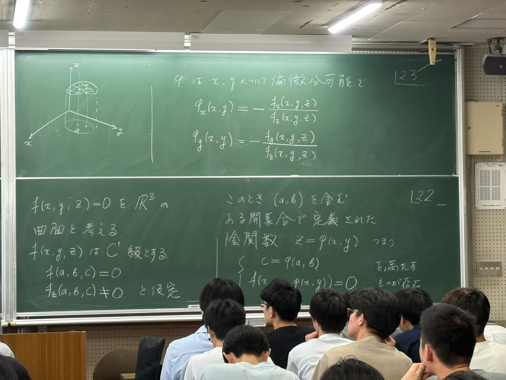
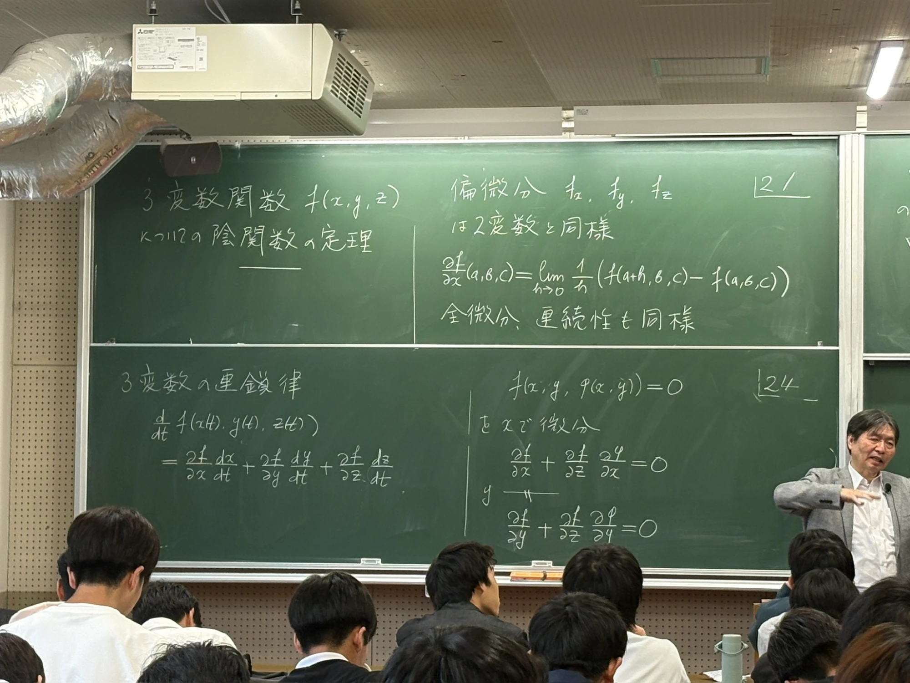
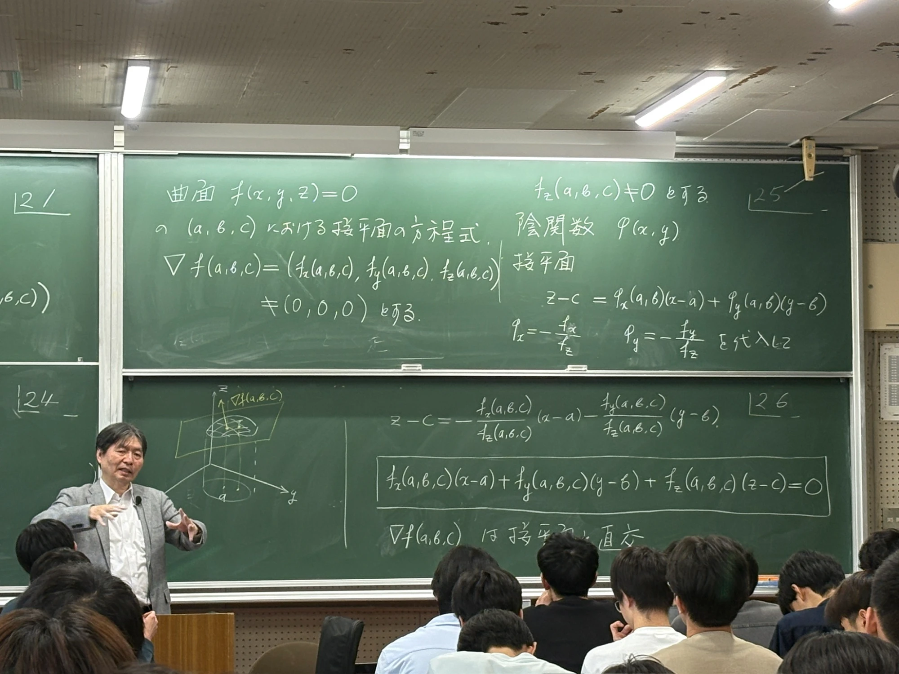
11. 具体例で練習(板書にない補足)
公式の使い方を、簡単な例で確かめておきます。
例1:円の傾き・接線・2階微分
$f(x,y)=x^2+y^2-1$。$f_x=2x,\ f_y=2y$。
- 傾き:$\varphi'(x)=-\dfrac{f_x}{f_y}=-\dfrac{2x}{2y}=-\dfrac{x}{y}$。
- 確認:$y=\varphi(x)=\sqrt{1-x^2}$ を直接微分すると $\varphi'=\dfrac{-x}{\sqrt{1-x^2}}=-\dfrac{x}{y}$。公式と一致します。
- 接線:点 $\left(\tfrac1{\sqrt2},\tfrac1{\sqrt2}\right)$ では $f_x=f_y=\sqrt2$ なので、(T) より $\sqrt2\left(x-\tfrac1{\sqrt2}\right)+\sqrt2\left(y-\tfrac1{\sqrt2}\right)=0$、すなわち $x+y=\sqrt2$。
- 2階:$f_{xx}=2,\ f_{xy}=0,\ f_{yy}=2$ を p.20 の公式に入れると $$\varphi''=-\frac{2\cdot(2y)^2-0+2\cdot(2x)^2}{(2y)^3}=-\frac{8(x^2+y^2)}{8y^3}=-\frac1{y^3}.$$ 直接微分した結果 $\varphi''=-(1-x^2)^{-3/2}=-\dfrac1{y^3}$ と一致します。
例2:デカルトの葉線 $x^3+y^3-3xy=0$
この式は $y$ について解く公式がきれいには書けませんが、陰関数の定理が使えます。点 $\left(\tfrac32,\tfrac32\right)$ が曲線上にあるか確認すると、$\tfrac{27}{8}+\tfrac{27}{8}-3\cdot\tfrac94=\tfrac{27}{4}-\tfrac{27}{4}=0$ で OK。
$f_x=3x^2-3y,\ f_y=3y^2-3x$ より、点 $\left(\tfrac32,\tfrac32\right)$ で $f_x=\tfrac94,\ f_y=\tfrac94\ne0$。よって陰関数 $y=\varphi(x)$ が存在して $$\varphi'\left(\tfrac32\right)=-\frac{9/4}{9/4}=-1.$$ 接線は (T) より $\tfrac94(x-\tfrac32)+\tfrac94(y-\tfrac32)=0$、すなわち $x+y=3$。
2階微分($f_{xx}=6x=9,\ f_{xy}=-3,\ f_{yy}=6y=9$):$f_{xx}+2f_{xy}\varphi'+f_{yy}(\varphi')^2+f_y\varphi''=0$ に代入すると $$9+2(-3)(-1)+9\cdot1+\tfrac94\,\varphi''=0\ \Longrightarrow\ \varphi''\left(\tfrac32\right)=-\tfrac{32}{3}.$$ (負なので、この点のまわりでグラフは上に凸です。)
例3:球面の接平面($3$ 変数)
$f(x,y,z)=x^2+y^2+z^2-1$。点 $\left(\tfrac1{\sqrt3},\tfrac1{\sqrt3},\tfrac1{\sqrt3}\right)$ では $\nabla f=(2x,2y,2z)=\tfrac{2}{\sqrt3}(1,1,1)$。接平面は $$\tfrac2{\sqrt3}\left(x-\tfrac1{\sqrt3}\right)+\tfrac2{\sqrt3}\left(y-\tfrac1{\sqrt3}\right)+\tfrac2{\sqrt3}\left(z-\tfrac1{\sqrt3}\right)=0\ \Longleftrightarrow\ x+y+z=\sqrt3.$$ また $\varphi_x=-\dfrac{f_x}{f_z}=-\dfrac{x}{z}$、この点では $-1$。上半球 $z=\sqrt{1-x^2-y^2}$ を直接 $x$ で偏微分した $-\dfrac{x}{\sqrt{1-x^2-y^2}}=-\dfrac xz$ と一致します。
12. まとめ(この回で覚えること)
- 陰関数:方程式 $f(x,y)=0$ から、点 $(a,b)$ のまわりで局所的に決まる関数 $y=\varphi(x)$($\varphi(a)=b,\ f(x,\varphi(x))=0$)。
- 陰関数の定理:$f$ が $C^1$ 級、$f(a,b)=0$、$f_y(a,b)\ne0$ ⟹ $(a,b)$ のまわりで陰関数 $y=\varphi(x)$ が(一意的に)存在し、微分可能で $\varphi'(x)=-\dfrac{f_x}{f_y}$。
- $f_x(a,b)\ne0$ なら、$x=\psi(y)$ として同様。$\nabla f\ne(0,0)$ ならどちらかで陰関数が定まる。
- 証明の流れ:$f_y\gt0$ の近くで、縦線ごとに「$f$ の符号が上下で逆」(連続性)→中間値の定理で零点がある→単調増加でただ1つ→ $\varphi$ が定まる。導関数は平均値の定理(または連鎖律)。
- $\varphi'=-f_x/f_y$ は、$f(x,\varphi(x))=0$ を連鎖律で微分した $f_x+f_y\varphi'=0$ から出る。もう一度微分すれば $\varphi''$。
- 接線:$f_x(a,b)(x-a)+f_y(a,b)(y-b)=0$。$\nabla f$ は曲線(等高線)に直交する。
- 3変数:$f_z\ne0$ のとき $z=\varphi(x,y)$、$\varphi_x=-f_x/f_z$、$\varphi_y=-f_y/f_z$。接平面は $f_x(x-a)+f_y(y-b)+f_z(z-c)=0$、$\nabla f$ は接平面に直交。
授業計画の次の項目はラグランジュの未定乗数法(条件付き極値)です。そこでは「$g(x,y)=0$ という条件のもとで $f$ の最大・最小を探す」ことになり、$g(x,y)=0$ は曲線、そして $\nabla f$ と $\nabla g$ が平行になる点が候補になります。今回の「$\nabla g$ が曲線に直交する」「陰関数で曲線を関数として扱う」という知識がそのまま使われます。
13. この回のノートについてのメモ(板書の乱れの扱い)
板書には、ページ番号の乱れや欠けがありました。次のように判断してまとめています。もし違うところがあれば教えてください。
- p.7、p.12、p.19 が板書にない:内容が自然につながるように、第5節 Step 1(p.7)、第6節 6.1(p.12)、第7節(p.19)に黄色い枠で補足を入れました。
- p.16 の右半分(2変数の平均値の定理):ページ番号は 16 ですが、内容は p.13 の計算で使うもの(「$f(x+h,y+k)=0$ より」の前の準備)なので、第6節 6.3 に入れました。p.16 の左半分(「応用 曲線 $f(x,y)=0$ の…」)は、接線の話(第9節、p.17–18)の書き出しとして扱いました。
- p.21が写真に2回写っていました(同じ内容)。1回だけ載せています。
- p.11の「$\varphi(a)=\varphi(b)$」は「$\varphi(a)=b$」と読みました。
- 板書の図は、見やすいように描き直して載せています。原本の写真は、各節の下の折りたたみで見られます。
- 講義では説明されていない補足(補足と書いた黄色の枠、第11節の例)は、私(Claude)が書き足したものです。授業で使った記号や順序とは違う可能性があるので、テスト前には板書と照らし合わせてください。